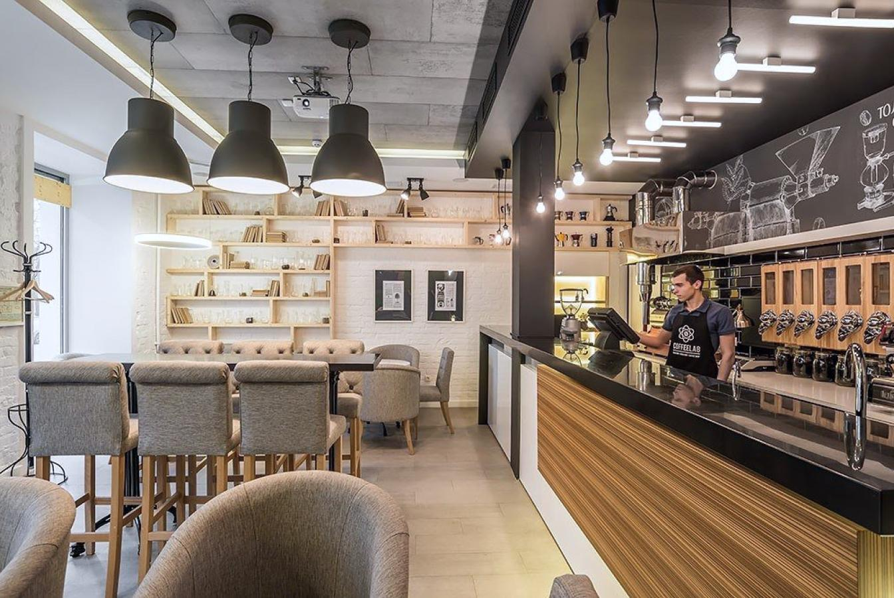

Отзывы
Уютное кафе , интерьер располагает , чтобы отдохнуть и выпить чашечку кофе. Персонал всегда приветливый и вежливый. Кофе делают вкусный. Стоит побывать.
Была в этой кофейне впервые и осталась под большим впечатлением. Здесь удивительно уютно: мягкий свет, приглушённая музыка, много живых растений и приятный аромат свежеобжаренного кофе. Очень понравилась зона у окна — можно спокойно поработать за ноутбуком или почитать книгу. Отдельное спасибо за внимание к деталям: розетки у каждого столика, удобные подушки на стульях и приветливый персонал. Теперь это моё любимое место в городе!
Интерьер — настоящая находка для тех, кто ценит стиль и комфорт. Сочетание дерева, мягких диванов и приглушённого света создаёт ощущение, что ты не в обычной кофейне, а в гостях у друзей. Очень понравилось, что есть отдельный столик для компании с настольными играми — провели здесь целый вечер с друзьями и не заметили, как пролетело время. А ещё здесь тихо играет классный джаз, который не мешает разговору, но добавляет атмосферности. Всем советую!
Кофе здесь действительно на высшем уровне. Я большой любитель рафов, и местный раф с солёной карамелью — один из лучших, что я пробовал. Бариста учитывает пожелания: я попросил сделать чуть менее сладким, и напиток приготовили идеально. Видно, что ребята используют качественное зерно и следят за каждым этапом приготовления. Также обязательно попробуйте их капучино на овсяном молоке — текстура плотная, пенка нежная, вкус сбалансированный. Очень рад, что в нашем районе открылось такое место!
Была здесь несколько раз, и каждый раз пробую что-то новое из меню. Очень радует, что десерты не только красивые, но и действительно вкусные. Мой фаворит — морковный торт: он влажный, с тонким слоем сливочного сыра и без излишней сладости. Также рекомендую сырники — они воздушные, с хрустящей корочкой, подаются с домашним вареньем из лесных ягод.
Хочу выразить огромную благодарность всей команде кофейни. Здесь действительно работают люди, которые любят своё дело. Бариста всегда улыбаются, готовы подробно рассказать о сортах кофе, предложить альтернативу, если вы не уверены в выборе.
Свяжитесь с нами, пока кофе не остыл
г. Минск
ул. Свердлова, д. 2
+375 11 111 11 11
Забронировать столик

Часто задаваемые вопросы
Можно ли забронировать столик?
Да, столик можно забронировать заранее — удобнее всего написать нам в соцсети или позвонить. Особенно рекомендуем делать бронь заранее в выходные и вечером, когда у нас много гостей, тогда вы точно можете быть уверенными в наличии столика.
Какие способы оплаты принимаются в кофейне?
Мы принимаем оплату наличными и банковскими картами. Всё быстро и удобно - можно рассчитаться так, как вам комфортно.
Подходит ли кофейня для встреч или работы?
Да, у нас комфортно проводить встречи и работать за ноутбуком. Спокойная атмосфера, кофе и десерты помогают сосредоточиться и приятно провести время.
Есть ли у вас розетки для ноутбуков?
Да, в кофейне есть розетки, поэтому можно спокойно поработать за ноутбуком или зарядить телефон во время отдыха.
Подойдёт ли кофейня для визита с ребёнком?
Да, к нам можно приходить с детьми. В кофейне уютная атмосфера, есть детский уголок, где ребёнку будет комфортно и весело, пока родители отдыхают.
Появляются ли у вас новые авторские напитки в течение года?
Да, мы регулярно обновляем меню и добавляем сезонные авторские напитки.У нас вы можете найти холодный кофе, лимонады, смузи и молочные коктейли. Кроме того, меню слабоалкогольных напитков. Следите за новинками в Instagram — там первыми рассказываем о запуске.